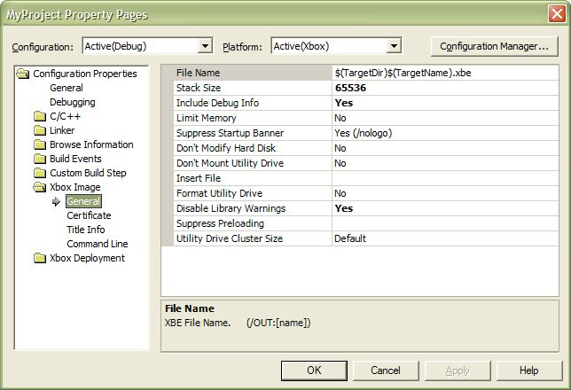

Creating New Visual Studio .NET Projects
The Xbox Development Kit for Microsoft® Visual Studio® .NET
contains improved wizards for getting you up and running as quickly as possible
on your Xbox game project. In addition, the XDK is much better integrated with
the Visual Studio .NET environment. Aside from Xbox-specific changes, Visual
Studio .NET itself offers a number of improvements over Visual C++ 6.0.
Xbox-Specific Project Creation Changes and Improvements
- For beginning developers (or experienced developers writing
quick proof-of-concept Xbox applications), the Xbox Application Wizard has been
enhanced. By default, a new Xbox project contains a working 3D
application, a 3D camera, and an animated 3D triangle. Just press F5 to
build and debug, and you are running your first Xbox game!
Note If you are building the wizard-created project for the first time
in Visual Studio .NET, you may encounter an error during the deployment
phase of the build process (because no default remote Xbox console has yet
been defined). To prevent this error, you may do the following: 1) specify the default remote
Xbox console by adding it to the debugging settings in your project's
property pages, 2) running any Xbox remote command line tool, or 3) installing the Windows Explorer Shell Extension for Xbox.
- To add the remote Xbox console name to the project's debugging settings,
click the Properties item on the Project menu, then click
Debugging in the left pane of the property pages dialog box. Enter
the name or IP address of the remote Xbox console in the Remote
Machine property, and then click OK.
- To specify the remote console name from the command line, run the
following (substituting your Xbox console's name or IP address for
xboxname):
xbdir -x xboxname
- To install the Shell Extension, on the Start menu, click Programs, Microsoft Xbox SDK, Setup Microsoft Windows Explorer Shell Extension for Xbox.
- A new Xbox Makefile Application Wizard has been added for advanced developers
who wish to bypass the Visual Studio .NET build system, but who still want to
use the IDE to fix their syntax errors. This project type allows
command-line build scripts to be conveniently called from within the
IDE.
- The Xbox Image Builder Tool (ImageBld)
property pages have been greatly expanded. Every command-line option is now documented and can be set using its own property grid
row, as shown in the following image:

- If you compile Discreet® 3ds maxTM plug-ins using Visual Studio .NET,
you must manually disable the automatically-defined preprocessor symbol
_WINDLL. Otherwise, your plug-in may not function correctly (it will
probably crash). To disable the _WINDLL define, click Properties on
the Project menu (to open the property pages), select the C/C++ folder,
click the Advanced property page, and then enter _WINDLL in the Undefine Preprocessor Definitions property.
Note Once you do this, you will
receive a compiler warning each time you compile.
General Project Creation Changes and Improvements
- The concept of a Workspace in Visual C++ 6.0 has been replaced with a
Solution in Visual Studio .NET. The purpose of a Solution does not
differ significantly from the purpose of a Workspace. Both are
top-level containers that hold multiple projects.
- Visual Studio .NET supports multiple platforms (Xbox and Win32) in the
same solution and project. Cross-platform (Win32/Xbox) game developers
can now build both Xbox and Win32 versions of their game from the same
project files. Each platform can have its own set of build settings.
- When you create a project in Visual Studio .NET, it always creates a
directory to hold the project, and this directory is given the same name
as the project. Naming the associated directory after the project
prevents the wizards from creating two projects in the same directory.
Suppose you want to create a second project in same directory, or want
your project to have a different name than its associated directory. The
best solution is to create the project (giving it the name you want) in a
temporary location. Close the temporary solution you have created for
this project. Next, use Windows Explorer to copy all of the files into
the directory that you want them in. Now, open your real solution, and then use
the File | Add Project | Existing Project menu item to add the project from its desired
location into your solution.
- The new project wizards provided by the XDK let you create a simple library
or XBE. You can also use these new wizards to create a project that will
allow you to shell out a build command to your own build engine. If you
need more complex wizard functionality, use the Custom wizard to
create your own. This wizard is different than the custom application
wizards in Visual C++ 6.0 because it is implemented in HTML and
JavaScript. Conversely, in order to make custom wizards easier to write,
the custom wizards used in Visual C++ 6.0 had to be written in MFC.
- The Automation model in Visual Studio .NET has been dramatically enhanced
for both the project system and the CodeModel. Every aspect of a Visual
Studio .NET project can be controlled programmatically by writing your own
scripts or add-ins.
- The settings dialog box in Visual Studio .NET has changed in many ways from
Visual C++ 6.0. The name of the menu item to open it is now Properties
instead of Settings. The shortcut key for the settings dialog box has
become Shift+F4. The settings dialog box is now modeless. It no
longer contains a tree view that duplicates the contents of the Solution
Explorer. Instead, it uses the selection in Solution Explorer to tell it
which property pages to display. This has some unexpected side effects
that take some getting used to. If the item you have selected in the IDE is
not the Solution Explorer, the pages displayed in the settings dialog box may
go away. For example, if you are viewing the settings pages for a file,
and you double-click on that file in the Solution Explorer to open it in
the editor, the property pages in the settings dialog box will go away
(because the selection of the IDE will be the text editor). Use the Ctrl+Alt+L shortcut to return to the Solution Explorer.
- The project system now supports environment variables and built-in macros
anywhere you can type text into the project settings dialog. A pop-out
macro editor displays all the available built-in macros and associated
values for the current selection. To insert a macro into your settings
from the macro editor, double-click the macro you want to insert.
Environment variables can also be used, following the same $(EnvVarName)
syntax used in Visual C++ 6.0. In Visual C++ 6.0, environment variables could only be used in
custom build steps and in other specific places.
- Visual Studio.NET allows you to apply any system tool to any file you
want (for example, you can apply the C++ compiler to myfile.qlj). From
the Tools.Options.Project.VC++ Build dialog box in the C/C++ File Extensions
property, you can also declare any file extensions you want the C++
compiler to handle.
- The project files used by Visual Studio .NET (.vcproj file extension) are
XML-formatted, allowing for much easier manipulation if you need to
customize your title's build process with command line or other external
tools.